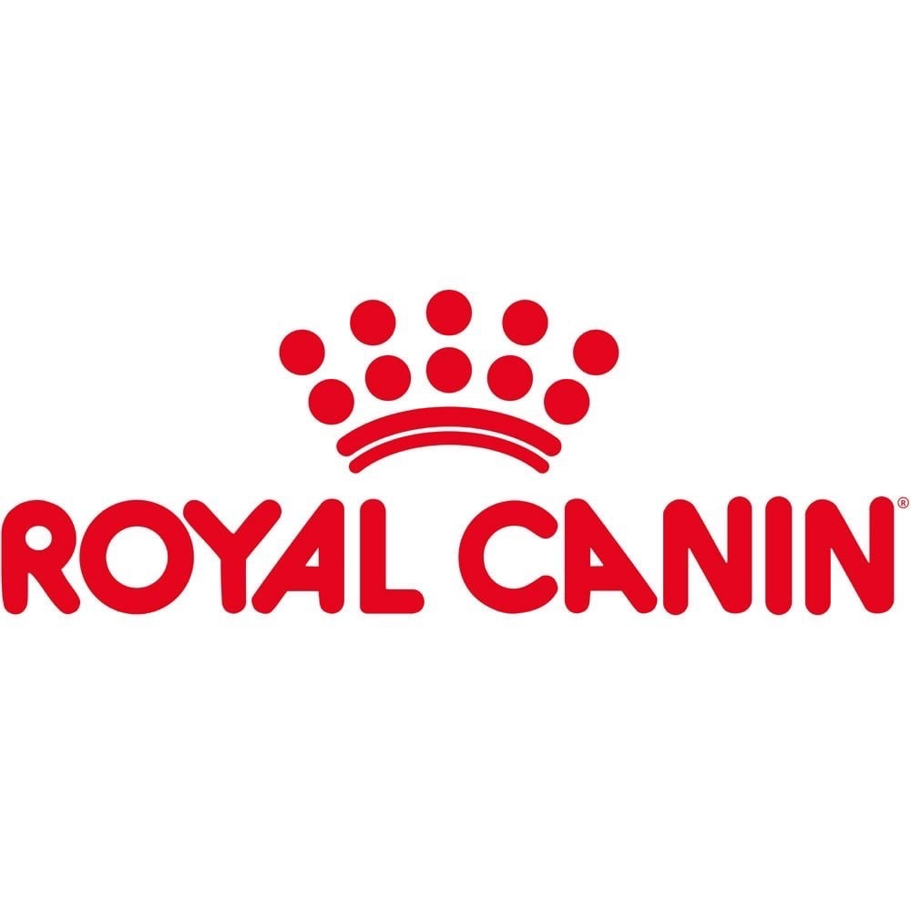
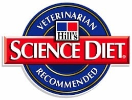
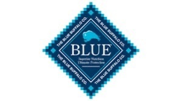
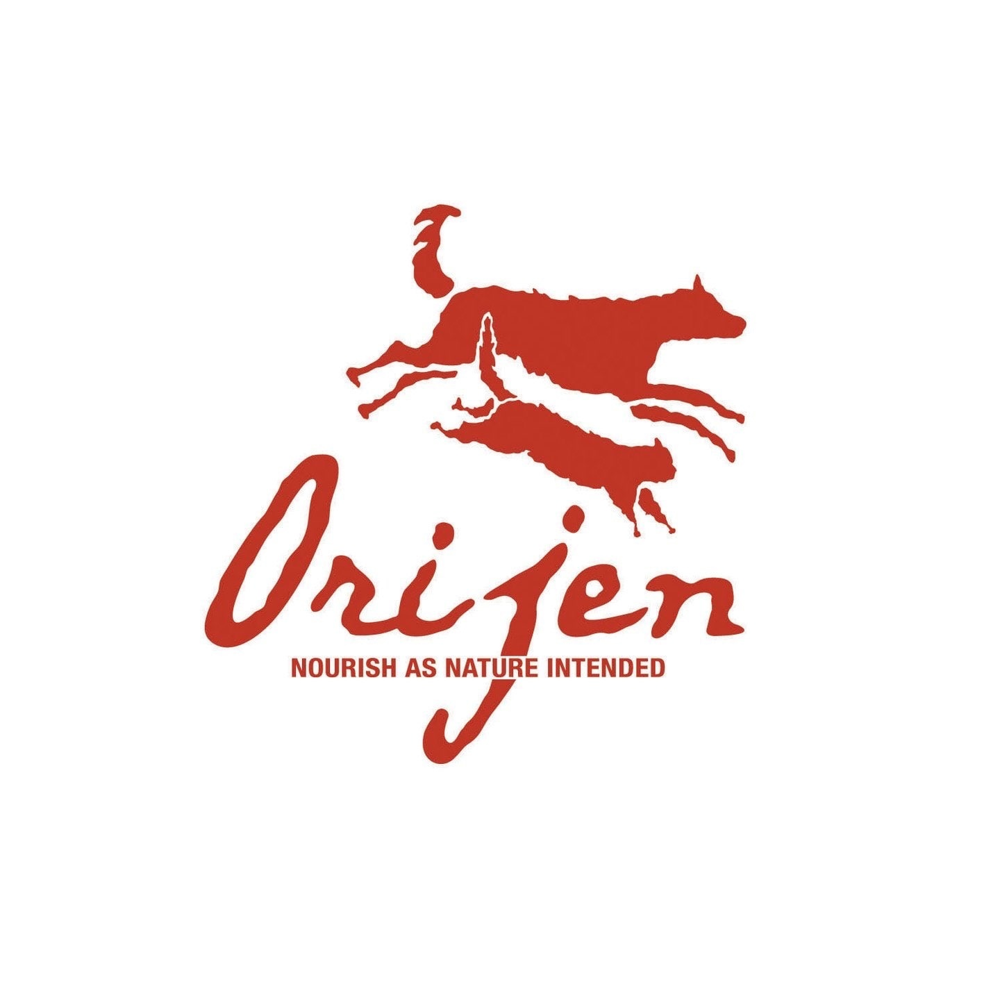
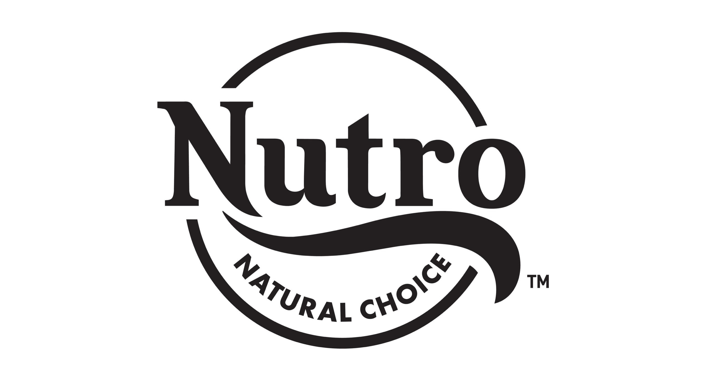

|
О нас
Животные
Популярные бренды
Жизненный период
Выставки
|
Популярные бренды
| Royal Canin |
|  |
это французский бренд, который специализируется на создании кормов для домашних
животных, учитывая их возраст, породу, размер и особенности здоровья.
|
| Hill's Science Diet |
|  |
это американский бренд, который предлагает корма для домашних животных с учетом
их потребностей в питательных веществах и состоянии здоровья.
|
| Purina |
|
это американский бренд, который производит корма для домашних животных различных
возрастов и пород.
|
| Iams |
|
это американский бренд, который специализируется на создании кормов для домашних
животных, учитывая их потребности в питательных веществах и здоровье.
|
| Blue Buffalo |
|  |
это американский бренд, который использует натуральные ингредиенты для создания
своих кормов для домашних животных.
|
| Orijen |
|  |
это канадский бренд, который производит корма для домашних животных, используя
высококачественные ингредиенты и учитывая их потребности в питательных
веществах.
|
| Acana |
|
это канадский бренд, который использует свежие и натуральные ингредиенты для
создания своих кормов для домашних животных.
|
| Nutro |
|  |
это американский бренд, который производит корма для домашних животных,
используя высококачественные ингредиенты и учитывая их потребности в питательных
веществах.
|
|